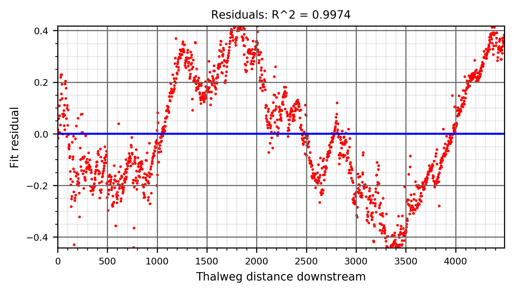
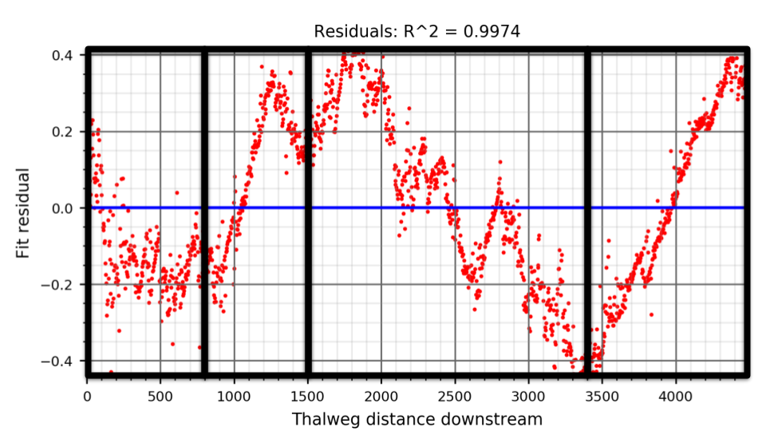
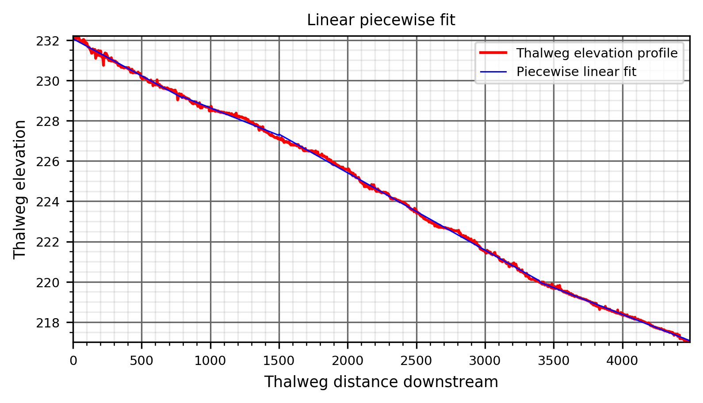
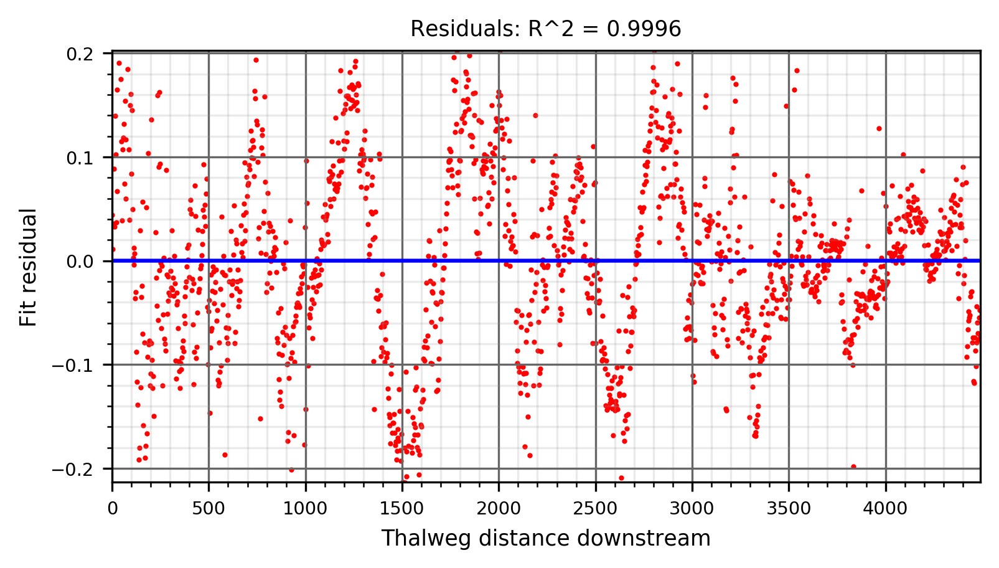

Thalweg based DEM detrending
Here we detrend the topo-bathymetric DEM by applying a piecewise linear fit model to it's thalweg elevation profile. This allows the resulting detrended DEM cell values to be a proxy for flow stage elevation (Z).
Inputs
The thalweg elevation profile .csv file, xyz_elevation_table.csv
The generated topo-bathymetric digital elevation model, las_dem.tif
USER INPUT: Thalweg elevation profile slope break points separated by commas
Separated by commas in ascending order
i.e. 500,1000,1800,2900
A tip for selecting slope breakpoints is to identify segments of linearity after plotting the residuals of a simple linear fit.
Note
Selecting slope breakpoints is an iterative process. Do not detrend the DEM until the selected points produce a satisfactory piecewise linear fit model. See below.
Slope breakpoint selection example
We start by plotting a linear fit without breakpoints, and observing the residual plot:
{kind=link}
As you can see, there are segments with considerable linearity at a scale greater than typical in-channel topographic heterogeneity. We mark these segments below.
{kind=link}
We then use the distances downstream that each identified segment starts at as the slope breakpoints parameter (i.e. '800,1500,3400'), and examine the quality of the generated piecewise linear fit.
{kind=link}
The updated residual plot does not include long segments of linearity, which is an indication that appropriate number of slope breakpoints were input.
{kind=link}
In this case the quality of the fit seems suitable, therefore we could proceed to click the 'Detrend DEM!' button in the GUI.
Important
Sudden vertical jumps at the slope breakpoints will negatively effect the quality of your detrended DEM. Large scale residual trends (i.e. all positive residuals on one end of the channel, and all negative on the other) will substantial degrade GCS analysis quality.
Relevant Outputs
A detrended DEM in the same resolution as the input topo-bathymetric DEM, ras_detren.tif
A text file recording chosen slope breakpoints and linear regression equations applied between them, detrending_plots/detrending_fit_eqs.txt
A figure showing the plotted thalweg elevation profile and the piecewise linear regression model, detrending_plots/fit_plot.png
A figure showing the linear fit model residual values along the thalweg's longitudinal profile, detrending_plots/residual_plot.png
Warning
Wide, flat floodplains can cause erroneous artifacts of the detrending methodology to be observable, especially farther from the thalweg.
{kind=link}